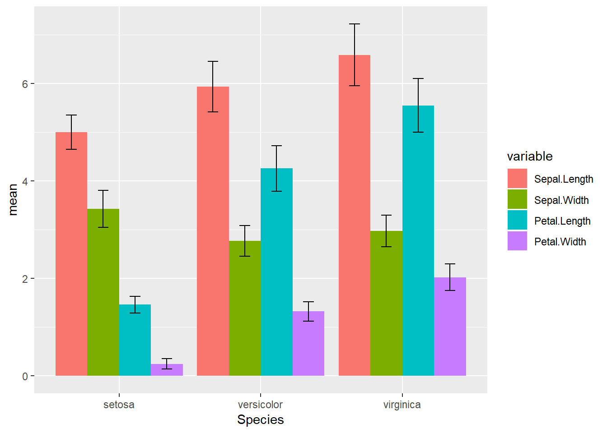

10 Lecture 09 - ggplot / dlyr for 96well fluorescence data
강의 노트 Lecture note
이번 시간에는 dplyr과 reshape2, 그리고 ggplot2를 이용하여 지난 수업들을 통해 만들었던 96well fluorescence 데이터에 대한 bar graph와 error bar를 구현해 보기로 하겠습니다. 계속 강조하는 바와 같이 R의 장점은 데이터 분석에 최적화된 언어 입니다. 데이터 분석에는 통계적 알고리즘을 적용하여 원하는 정보를 도출해내는 것이 핵심이지만 그 전에 가지고 있는 데이터를 눈으로 확인하는 작업이 필수이고 이를 위해 데이터를 적절히 변형하는 작업이 수없이 반복됩니다. dplyr과 reshape2 패키지는 이러한 데이터 변형 작업을 수행하기 위해 가장 선호되는 패키지들 중 하나이며 ggplot2 또한 데이터 가시화를 위해 가장 많이 쓰이는, 즉 가장 효율적인 패키지라고 할 수 있습니다. 이번 시간은 이러한 패키지들의 기본 사용법에 대해 설명하는 마지막 시간이 되겠습니다. 아래와 같이 관련 패키지들을 로딩해 주고 시작합니다.
library(ggplot2)
library(dplyr)
library(reshape2)10.1 dplyr functions
지난 시간 학습한바와 같이 dplyr패키지에는 select, filter, group_by, summarize, arrange, join, mutate 등의 함수로 이루어져 있습니다. iris data를 가지고 몇 가지 함수에대한 실습을 하겠습니다.
먼저 select 함수는 특정 data.frame에서 원하는 variable을 뽑아주는 기능을 합니다. 첫번째 인자로 data.frame을 넣고 두 번째부터는 해당 data.frame에 있는 변수들 중 뽑고싶은 변수들의 이름을 넣습니다.
head(iris)## Sepal.Length Sepal.Width Petal.Length Petal.Width Species
## 1 5.1 3.5 1.4 0.2 setosa
## 2 4.9 3.0 1.4 0.2 setosa
## 3 4.7 3.2 1.3 0.2 setosa
## 4 4.6 3.1 1.5 0.2 setosa
## 5 5.0 3.6 1.4 0.2 setosa
## 6 5.4 3.9 1.7 0.4 setosairis_select <- select(iris, Sepal.Length, Sepal.Width, Species)
head(iris_select)## Sepal.Length Sepal.Width Species
## 1 5.1 3.5 setosa
## 2 4.9 3.0 setosa
## 3 4.7 3.2 setosa
## 4 4.6 3.1 setosa
## 5 5.0 3.6 setosa
## 6 5.4 3.9 setosaselect 함수가 관심있는 변수(column)를 뽑았다면 filter 함수는 관심있는 데이터(row)를 뽑는 함수로 생각하면 되겠습니다. iris 데이터 중 Species 가 sentosa 인 데이터만 뽑고싶은 경우 다음과 같이 작성하면 됩니다. 주의할 점은 R의 기본 stats 패키지에도 filter라는 함수가 있어서 library(dplyr)로 dplyr 패키지를 읽지 않아도 실행은 되지만 문법이 달라서 에러가 발생할 수 있습니다.
str(iris)## 'data.frame': 150 obs. of 5 variables:
## $ Sepal.Length: num 5.1 4.9 4.7 4.6 5 5.4 4.6 5 4.4 4.9 ...
## $ Sepal.Width : num 3.5 3 3.2 3.1 3.6 3.9 3.4 3.4 2.9 3.1 ...
## $ Petal.Length: num 1.4 1.4 1.3 1.5 1.4 1.7 1.4 1.5 1.4 1.5 ...
## $ Petal.Width : num 0.2 0.2 0.2 0.2 0.2 0.4 0.3 0.2 0.2 0.1 ...
## $ Species : Factor w/ 3 levels "setosa","versicolor",..: 1 1 1 1 1 1 1 1 1 1 ...iris_filter <- filter(iris, Species=="setosa")
str(iris_filter)## 'data.frame': 50 obs. of 5 variables:
## $ Sepal.Length: num 5.1 4.9 4.7 4.6 5 5.4 4.6 5 4.4 4.9 ...
## $ Sepal.Width : num 3.5 3 3.2 3.1 3.6 3.9 3.4 3.4 2.9 3.1 ...
## $ Petal.Length: num 1.4 1.4 1.3 1.5 1.4 1.7 1.4 1.5 1.4 1.5 ...
## $ Petal.Width : num 0.2 0.2 0.2 0.2 0.2 0.4 0.3 0.2 0.2 0.1 ...
## $ Species : Factor w/ 3 levels "setosa","versicolor",..: 1 1 1 1 1 1 1 1 1 1 ...다음 group_by 함수는 데이터를 특정 기준으로 나누어주는 기능을 합니다. 예를 들어 iris 데이터에는 Species각 3종류가 있고 group_by 함수는 이 3가지 species 별로 데이터를 나누어주는 함수입니다. 이 때 기준이 되는 변수는 factor형이어야 합니다.
str(iris_select)## 'data.frame': 150 obs. of 3 variables:
## $ Sepal.Length: num 5.1 4.9 4.7 4.6 5 5.4 4.6 5 4.4 4.9 ...
## $ Sepal.Width : num 3.5 3 3.2 3.1 3.6 3.9 3.4 3.4 2.9 3.1 ...
## $ Species : Factor w/ 3 levels "setosa","versicolor",..: 1 1 1 1 1 1 1 1 1 1 ...iris_group <- group_by(iris_select, Species)
str(iris_group)## Classes 'grouped_df', 'tbl_df', 'tbl' and 'data.frame': 150 obs. of 3 variables:
## $ Sepal.Length: num 5.1 4.9 4.7 4.6 5 5.4 4.6 5 4.4 4.9 ...
## $ Sepal.Width : num 3.5 3 3.2 3.1 3.6 3.9 3.4 3.4 2.9 3.1 ...
## $ Species : Factor w/ 3 levels "setosa","versicolor",..: 1 1 1 1 1 1 1 1 1 1 ...
## - attr(*, "groups")=Classes 'tbl_df', 'tbl' and 'data.frame': 3 obs. of 2 variables:
## ..$ Species: Factor w/ 3 levels "setosa","versicolor",..: 1 2 3
## ..$ .rows :List of 3
## .. ..$ : int 1 2 3 4 5 6 7 8 9 10 ...
## .. ..$ : int 51 52 53 54 55 56 57 58 59 60 ...
## .. ..$ : int 101 102 103 104 105 106 107 108 109 110 ...
## ..- attr(*, ".drop")= logi TRUE이제 summarize 함수를 이용해서 앞서 그룹별로 나누어진 데이터들의 summary를 구할 수 있습니다. 통계에서 summary는 데이터를 나타내는 대푯값으로 중앙을 나타내는 평균, 흩어진정도를 나타내는 분산(표준편차), 최대값, 최소값 등을 말합니다. summarize의 help를 참고하시면 되겠습니다. 앞서 Species 별로 그룹을 나누었고 각 그룹별로 sepal.length와 sepal.width에 대한 평균을 구하는 코드입니다.
iris_mean <- summarise(iris_group,
mean(Sepal.Length),
mean(Sepal.Width))
head(iris_mean)## # A tibble: 3 x 3
## Species `mean(Sepal.Length)` `mean(Sepal.Width)`
## <fct> <dbl> <dbl>
## 1 setosa 5.01 3.43
## 2 versicolor 5.94 2.77
## 3 virginica 6.59 2.97그런데 만약 sepal.length, sepal.width 외에도 petal.length, petal.with 등 해당 data.frame (tibble)의 모든 변수(컬럼)에 대한 평균을 구할 경우는 summarize_all 함수를 사용합니다. 위에서 mean(sepal.length) 등 모든 변수들에 대해서 같은 mean 함수를 적용하는 수고를 덜어주는 방법입니다.
iris_mean <- summarize_all(iris_group, mean)
head(iris_mean)## # A tibble: 3 x 3
## Species Sepal.Length Sepal.Width
## <fct> <dbl> <dbl>
## 1 setosa 5.01 3.43
## 2 versicolor 5.94 2.77
## 3 virginica 6.59 2.97mean 외에도 앞에서 언급한바와 같이 sd, min, max 등의 함수를 적용하는 것이 가능합니다.
iris_sd <- summarize_all(iris_group, sd)
head(iris_sd)## # A tibble: 3 x 3
## Species Sepal.Length Sepal.Width
## <fct> <dbl> <dbl>
## 1 setosa 0.352 0.379
## 2 versicolor 0.516 0.314
## 3 virginica 0.636 0.322마지막으로 join 함수 입니다. ggplot을 이용하여 그래프를 그릴 때 모든 필요한 정보는 ggplot의 첫번째 인자로 들어가는 data.frame 안에 들어있어야 합니다. 즉, barplot을 그릴 때 mean 값과 error bar를 그릴 표준편차 (sd)값이 모두 하나의 data.frame 안에 있어야 하므로 앞에서 구한 iris_mean과 iris_sd를 합해서 하나의 data.frame으로 만들어야 합니다.
이렇게 두 데이터를 merge 할 때 주의할 점은 mean 값을 갖는 샘플과 같은 샘플에 sd 값을 붙여주어야 한다는 것 입니다. 즉, cbind로 mean 과 sd 컬럼을 막연히 가져다 붙이면 안되고 각 샘플이 같은지 확인 후 붙여야 합니다. 여기서 각 샘플이 같은지는 합 할 두 data.frame가 갖는 공통의 ID를 비교해서 알 수 있습니다. join 함수의 by 파라미터로 공통의 ID를 지정할 수 있습니다. inner_join, left_join, right_join 등 두 데이터셋의 ID가 같지 않을 경우에 대해서 다른 기능을 수행하는 몇 가지 함수들이 있습니다. 자세한 내용은 help페이지를 참고하세요.
본 예에서는 Species를 공통의 변수로 가지고 있으므로 by="Species"로 명시해줍니다. 만약 여러 변수를 참조해야 할 경우에는 해당 변수들의 이름을 c() 함수를 이용해서 함께 적어주면 되겠습니다.
iris_join <- inner_join(iris_mean, iris_sd, by="Species")
iris_join## # A tibble: 3 x 5
## Species Sepal.Length.x Sepal.Width.x Sepal.Length.y Sepal.Width.y
## <fct> <dbl> <dbl> <dbl> <dbl>
## 1 setosa 5.01 3.43 0.352 0.379
## 2 versicolor 5.94 2.77 0.516 0.314
## 3 virginica 6.59 2.97 0.636 0.32210.2 Data transformation using melt function
지난 몇 번의 강의에서 언급한바와 같이 위 iris_join의 경우 처럼 다수의 변수를 갖는 데이터를 ggplot를 이용한 그래프로 표현하기 위해서는 변수이름을 나타내는 변수 하나와 각 변수들의 값을 갖는 변수 하나, 해서 두 개의 변수로 가지고 있는 데이터를 변환해 주는 것이 필요합니다. 위 iris_join 데이터는 sepal.length.x와 sepal.width.x 평균 값을 갖는 변수 2개를 가지고 있는데, 이 데이터를 ggplot으로 그림을 그린다면 x축에는 species를 y축에는 평균을 그려야 하지만 y축 평균을 y=Sepal.Length.x 로 할지 y=Sepal.Width.x 를 할지 하나만을 골라야 합니다. geom_xxx 함수를 여러번 이용해서 다수의 변수 값들을 표현하는 방법이 있을 수 있으나 한정적인 그래프의 경우만 가능하고 변수가 많아질 경우 코드가 복잡해집니다.
reshape2 패키지의 melt함수는 위에서 말한 데이터의 변환을 자동으로 수행해주는 함수 입니다. data.frame에 대해서 작동하는 경우만을 생각해 보면 (?melt.data.frame) id.vars 와 measure.vars 두 개의 파라메터를 볼 수 있습니다. measure.vars는 관측한 값이 저장된 변수를 모두 적어줄 수 있고 id.vars 관측값 외의 변수의 이름을 명시해 주어서 ID가 되도록 합니다. 각각의 입력 변수 이름은 사용자가 어떤 데이터를 만들지에 따라서 다르게 입력될 수 있습니다. iris_join 예에서는 Species를 제외한 모든 값들이 관측값이므로 다음과 같이 실행하면 되겠습니다. 가장 처음 column의 factor형 변수가 default로 id로 인식되므로 id.vars="Species"를 적지 않아도 동일하게 작동합니다 (Species가 id로 사용된다는 메세지 출력).
melt(iris_join, id.vars="Species")## Species variable value
## 1 setosa Sepal.Length.x 5.0060000
## 2 versicolor Sepal.Length.x 5.9360000
## 3 virginica Sepal.Length.x 6.5880000
## 4 setosa Sepal.Width.x 3.4280000
## 5 versicolor Sepal.Width.x 2.7700000
## 6 virginica Sepal.Width.x 2.9740000
## 7 setosa Sepal.Length.y 0.3524897
## 8 versicolor Sepal.Length.y 0.5161711
## 9 virginica Sepal.Length.y 0.6358796
## 10 setosa Sepal.Width.y 0.3790644
## 11 versicolor Sepal.Width.y 0.3137983
## 12 virginica Sepal.Width.y 0.3224966위 melt 함수의 파라메터 중 value.name 이라는 인자에는 value 라는 이름 대신 사용하고싶은 이름을 넣을 수 있습니다. 위의 경우 mean과 sd 값이 모두 value라는 변수에 함께 저장되어 있습니다. 그런데 우리가 그려줄 값은 mean 값이고 sd 는 error bar를 그리는데에만 사용될 것입니다. 즉, y축에는 평균만 그리므로 value에서 sd 값들은 제외하고 ggplot의 aes에서 y=value라는 코드로 원하는 그래프를 그릴수 있을 것 입니다.
정리해 보면 위 예에서는 melt 를 사용하기 전에 join으로 mean과 sd 값들을 하나의 value로 merge 했으나 실제로는 join 전에 먼저 melt를 사용해서 모든 평균값과 sd값들을 별개의 변수에 각각 저장하고 그 후 join으로 mean과 sd를 mean은 bar를 그리는데 사용하고 sd는 error bar를 그리는데 사용하는 것이 맞는 순서로 보입니다. 아래는 이러한 일련의 작업들을 %>%를 사용한 코드입니다.
iris_mean <- iris %>% group_by(Species) %>% summarise_all(mean) %>% melt(value.name="mean")## Using Species as id variablesiris_sd <- iris %>% group_by(Species) %>% summarise_all(sd) %>% melt(value.name="sd")## Using Species as id variablesiris_join <- inner_join(iris_mean, iris_sd, by=c("Species", "variable"))
iris_join## Species variable mean sd
## 1 setosa Sepal.Length 5.006 0.3524897
## 2 versicolor Sepal.Length 5.936 0.5161711
## 3 virginica Sepal.Length 6.588 0.6358796
## 4 setosa Sepal.Width 3.428 0.3790644
## 5 versicolor Sepal.Width 2.770 0.3137983
## 6 virginica Sepal.Width 2.974 0.3224966
## 7 setosa Petal.Length 1.462 0.1736640
## 8 versicolor Petal.Length 4.260 0.4699110
## 9 virginica Petal.Length 5.552 0.5518947
## 10 setosa Petal.Width 0.246 0.1053856
## 11 versicolor Petal.Width 1.326 0.1977527
## 12 virginica Petal.Width 2.026 0.2746501위 데이터는 모든 종류의 꽃잎과 꽃받침에 대한 평균과 표준편차를 하나의 테이블로 나타낸 최종 결과입니다. ggplot을 이용하여 평균을 그리고 각각에 대한 표준편차도 error bar로 표시할 수 있게 되었습니다. 지금까지의 데이터와 위치 조정을 통해서 그려진 bar graph는 다음과 같습니다.
p1 <- ggplot(iris_join, aes(x=Species, y=mean, fill=variable)) +
geom_bar(stat="identity", position="dodge") +
geom_errorbar(aes(ymin=mean-sd, ymax=mean+sd),
width=0.3, position=position_dodge(0.9))
p1
10.3 scale and theme of ggplot2
이제 ggplot의 scale과 theme에 대해서 알아봅니다. scale은 aes에서 mapping 된 x, y, 그리고 grouped 데이터들의 detail을 지정해주는 역할을 합니다. 따라서 x축, y축, 그리고 몇몇 groupping 된 그래프의 위치, 색상, 크기, 모양 등을 지정해 줍니다. 명령어의 (함수) 형태는 scale_<aesthetic>_<type> 형태이며 <aesthetic>과 <type>에 해당하는 (미리 지정된) 단어를 넣어주면 되겠습니다. 예를 들어 연속형 형태의 y축의 라벨링 이름을 바꾸고 싶을 경우 scale_y_continuous(name="Label name")과 같은 형태 입니다. 참고로 이 명령어는 각 축의 label을 바꾸는 명령어는 xlab, ylab와 같은 기능을 합니다.
아래 예에서는 앞서 p1에 저장된 그래프에 scale 옵션을 더해서 p2로 저장해 보겠습니다. bar graph에 색상을 바꾸고 ylab과 xlab 그리고 전체 title과 subtitle등을 지정했습니다. 색상 지정에 대해 자세한 내용은 ?scale_fill_hue 등을 참고하세요.
p2 <- p1 + scale_fill_hue(h = c(0, 360)) +
ylab("Length/width Mean2") +
xlab("Iris species2") +
labs(title = "IRIS Comparison", subtitle="Three types of iris", caption="Data source: xxx", fill="Types")
p2
이제 theme을 바꿔보겠습니다. theme은 내용은 그대로 두고 전체적인 그래프의 생김새를 꾸미는 기능으로 보면 되겠습니다. 크게 각 축의 라벨링, 배경 색상이나 모양, 범례의 모양 위치 등이 그 것 입니다. theme의 도움말에 usage를 보시면 파라메터 이름들이 직관적으로 써 있어서 좀 더 이해하기 편하실 수 있습니다. 특히 기존 만들어진 theme들을 사용할 수 있는데 이 예들은 ?theme_bw에서 보실 수 있습니다.
아래는 theme_bw (black and white) 를 적용하고 거기에 더해서 사용자가 원하는 다른 모양들을 추가로 업데이트 한 예제 입니다. 이를 theme overriding이라고 하는데요 기존 있던 설정의 일부를 바꾸는 작업으로 볼 수 있습니다. p2에 추가작업을 하고 변수에 저장하지 않으므로 바로 화면에 출력 됩니다.
p2 + theme_bw() +
theme(
text=element_text(size=14),
axis.text.y = element_text(size=10),
axis.title.y = element_text(size=20),
axis.title.x = element_text(size=20),
legend.position = "bottom",
#legend.position = c(0.1,0.9),
plot.title=element_text(hjust=0.5),
plot.subtitle=element_text(hjust=0.5)
)
10.4 bargraph for 96well dataset
이제 우리가 읽어들인 (비교적) 큰 데이터 (96 well plate 형광)를 가지고 bar graph와 error bar를 그려보도록 하겠습니다. 아래와 같이 먼저 데이터를 읽어 옵니다. 일곱번째 강의 시간에 작성한 코드가 (multiple_plate_excel_reader2 함수) c:\Rprog\07\read_plate.R 위치에 있습니다. 각자 맞는 위치와 파일 이름을 넣어주시면 되겠습니다.
setwd("C:\\Rprog\\07")
source("read_plate.R")
design_file_name <- "exp_design2.xlsx"
data_file_names <- c("20171012-phenol-1.xls",
"20171012-phenol-2.xls",
"20171227-phenol-1.xls",
"20171227-phenol-2.xls")
mydata1 <- multiple_plate_excel_reader2(design_file_name, data_file_names[1], sheet4design=1)## New names:
## * `` -> ...1
## * `` -> ...2
## * `` -> ...3
## * `` -> ...4
## * `` -> ...5
## * ... and 7 more problems## New names:
## * Time -> Time...5
## * Time -> Time...7mydata2 <- multiple_plate_excel_reader2(design_file_name, data_file_names[2], sheet4design=2)## New names:
## * `` -> ...1
## * `` -> ...2
## * `` -> ...3
## * `` -> ...4
## * `` -> ...5
## * ... and 7 more problems
## New names:
## * Time -> Time...5
## * Time -> Time...7mydata3 <- multiple_plate_excel_reader2(design_file_name, data_file_names[3], sheet4design=3)## New names:
## * `` -> ...1
## * `` -> ...2
## * `` -> ...3
## * `` -> ...4
## * `` -> ...5
## * ... and 7 more problems
## New names:
## * Time -> Time...5
## * Time -> Time...7mydata4 <- multiple_plate_excel_reader2(design_file_name, data_file_names[4], sheet4design=4)## New names:
## * `` -> ...1
## * `` -> ...2
## * `` -> ...3
## * `` -> ...4
## * `` -> ...5
## * ... and 7 more problems
## New names:
## * Time -> Time...5
## * Time -> Time...7mydata <- rbind(mydata1, mydata2, mydata3, mydata4)
mydata2 <- mydata
mydata2$concentration <- as.factor(mydata2$concentration)
str(mydata2)## 'data.frame': 304 obs. of 7 variables:
## $ well_names : chr "B11" "C11" "D11" "E11" ...
## $ OD : num 0.895 0.87 0.875 0.925 0.857 ...
## $ GFP : num 7947 8227 15117 69073 83805 ...
## $ sample_names : Factor w/ 6 levels "1","2","3","4",..: 1 1 1 1 1 1 2 2 2 2 ...
## $ replication : Factor w/ 4 levels "1","2","3","4": 1 1 1 1 1 1 1 1 1 1 ...
## $ drugname : Factor w/ 1 level "phenol": 1 1 1 1 1 1 1 1 1 1 ...
## $ concentration: Factor w/ 11 levels "0","0.05","0.1",..: 1 2 4 6 8 10 1 1 1 1 ...concentration 을 as.factor로 전환해주는 이유는 x축에 그려질 bar들이 histogram이 아니고 각각 하나씩의 값을 갖는 이산형 데이터이므로 factor 형태로 바꾸어 주어야 합니다.
이제 dplyr 패키지를 이용해서 반복 측정값들의 평균 GFP값과 표준편차를 구합니다. 먼저 어떤 변수를 기준으로 groupping을 할지 지정해 줍니다. 이는 replication을 제외한 모든 변수 sample_name, drugname, concentration이 되겠습니다. 그리고 summzarize로 그룹핑된 값들의 평균값을 계산합니다.
grouped_data <- group_by(mydata2, sample_names, drugname, concentration)
data_mean <- summarize(grouped_data, gfp_mean=mean(GFP))
head(data_mean)## # A tibble: 6 x 4
## # Groups: sample_names, drugname [1]
## sample_names drugname concentration gfp_mean
## <fct> <fct> <fct> <dbl>
## 1 1 phenol 0 4148.
## 2 1 phenol 0.05 5648.
## 3 1 phenol 0.1 3208
## 4 1 phenol 0.5 9790.
## 5 1 phenol 1 3343
## 6 1 phenol 5 35226.또한 에러바를 위한 표준편차 값을 구하고 위에서 학습한바와 같이 평규과 표준편차를 같은 row로 붙여주는 join을 수행합니다. 이 때 sample_name, drugname, concentration이 모두 같은 샘플끼리 평균과 표준편차를 붙여야 하므로 다음과 같이 by 뒤 위 변수들을 모두 명시해 줍니다. 참고로 data_mean과 data_sd에는 위 세개의 변수가 모두 같은 이름으로 저장되어 있습니다.
data_sd <- summarize(grouped_data, sd=sd(GFP))
data_join <- inner_join(data_mean, data_sd, by=c("sample_names", "drugname", "concentration"))
head(data_join)## # A tibble: 6 x 5
## # Groups: sample_names, drugname [1]
## sample_names drugname concentration gfp_mean sd
## <fct> <fct> <fct> <dbl> <dbl>
## 1 1 phenol 0 4148. 1981.
## 2 1 phenol 0.05 5648. 2849.
## 3 1 phenol 0.1 3208 84.9
## 4 1 phenol 0.5 9790. 7520.
## 5 1 phenol 1 3343 112.
## 6 1 phenol 5 35226. 36730.이제 ggplot으로 그림을 완성하면 되며 scale과 theme을 적절히 활용하여 원하는 그래프를 그리면 되겠습니다.
ggplot(data_join, aes(x=sample_names, y=gfp_mean, fill=concentration)) +
geom_bar(stat="identity", position="dodge", color="black") +
scale_fill_manual(values = heat.colors(11)) +
geom_errorbar(aes(min=gfp_mean-sd, max=gfp_mean+sd), width=.2, position=position_dodge(0.9))
p1 <- ggplot(data_join, aes(x=sample_names, y=gfp_mean, fill=concentration)) +
geom_bar(stat="identity", position="dodge", color="black") +
geom_errorbar(aes(min=gfp_mean-sd, max=gfp_mean+sd), width=.2, position=position_dodge(0.9))
p1 + scale_fill_hue(h = c(0, 360)) +
ylab("GFP") +
xlab("Concentration") +
labs(title = "GFP profiles for drug xxx",
subtitle="6 samples and 11 concentrations",
caption="Data source: xxx", fill="Conc.") +
theme_bw() +
theme(
text=element_text(size=14),
axis.text.y = element_text(size=10),
axis.title.y = element_text(size=20),
axis.title.x = element_text(size=20),
plot.title=element_text(hjust=0.5),
plot.subtitle=element_text(hjust=0.5)
)